South America · Argentina · Bariloche
Bariloche, November 2017
Bariloche is a town on the south shore of Lago Nahuel Huapi, in the Andes of Río Negro province, Argentina. I came after Chile, from El Calafate, in a long and badly planned bus ride, and stayed until Saturday, November 4, 2017. I did not take any tour. I walked along the lake, went to a lookout with a chairlift, and did a tandem skydive. Then I went one stop south, to Lago Puelo, on my way back to Chile.
My conclusion up front: the bus ride from El Calafate was a mistake, the lake and the mountains are the real reason to be here, and I would not do the skydive again just to tick it off a list. Details below.
The times are my phone's clock, and Google Photos stores them in Argentine time (GMT-3). The boxes hold research I did in November 2026, each with a source and a date, so you can tell it apart from what I remember. The places are my reading of the photos and of the location Google Photos gives them, and I say so where I am not sure.
- El Calafate to Bariloche: a 2023 blog gives 27 hours by bus, which matches mine, runs only in the warmer months (roughly October to May), and is cheaper than the flight. These are 2023 figures, so check both.
- City buses: they take only the SUBE card, according to the city's tourism page. I paid cash to a passenger who tapped his own card, which was a workaround I would not rely on. Buy a card.
- Cerro Campanario: a travel guide says the chairlift opens at 9:00 and closes between 17:00 and 18:00, and can close for wind or snow. My photos from the hill run until 18:44, so hours may differ by season. Check before you go.
- Onda Azul: the name matches the signs in my photos, but I do not know if the owners are the same as in 2017.
- The Roca statue: a plan to move it was approved in 2023. I did not check whether it was moved.
The sources and the details are in the boxes below the story. These things change, so check before you go.
Before Bariloche: El Calafate
I stopped in El Calafate on the way from Torres del Paine, and I have no photos from it. I remember one thing there, an ice cream place I think was called Ovejitas. I did not go to Perito Moreno Glacier, the main reason people come to El Calafate.
From El Calafate to Bariloche I took three buses: two of about 11 hours each and one of about 5 hours, so around 27 hours in total. I do not remember the exact date I left. Google Photos has no photos between October 28 and the morning of November 1, so I will only say around October 30, which fits the 27 hours.
That was a terrible mistake. I never checked whether I could pay about the same price for a one-hour flight. In hindsight I would try to hitchhike. In Spanish it is hacer dedo, "to do thumb". That is only my own hindsight: I did not check how common or safe it is on this road, so look into it before you rely on it.
A travel blog about this exact route, published August 21, 2023 and updated December 27, 2023, says the bus takes 27 hours, which matches my total, and that the bus is on average 5,000 to 10,000 pesos cheaper than the flight, which the author puts at about 10 to 20 US dollars. It also says there are usually no daily direct flights, and that the bus runs only in the warmer months, roughly October to May (Sol Salute).
These are 2023 figures, not 2017, and I do not know what I paid or what a flight cost at the time. Check both before you decide.
A listing for "Ovejitas de la Patagonia" describes a chocolate factory, ice cream counter and café at Av. del Libertador 1197 in El Calafate, with calafate-berry ice cream as the thing to try. The listing has no date, and its latest review is from September 26, 2025 (Wanderlog). I am not sure this is the same place I remembered, so treat the name as a guess.
November 1: the lake and the plaza
My first photo in Bariloche is from Wednesday, November 1, at 11:33. I do not remember how I got from the bus terminal to the lake. I walked along the shore. The sky was clear, the lake was calm, and there were snowy mountains on the other side. In several places along the beach there were construction works.
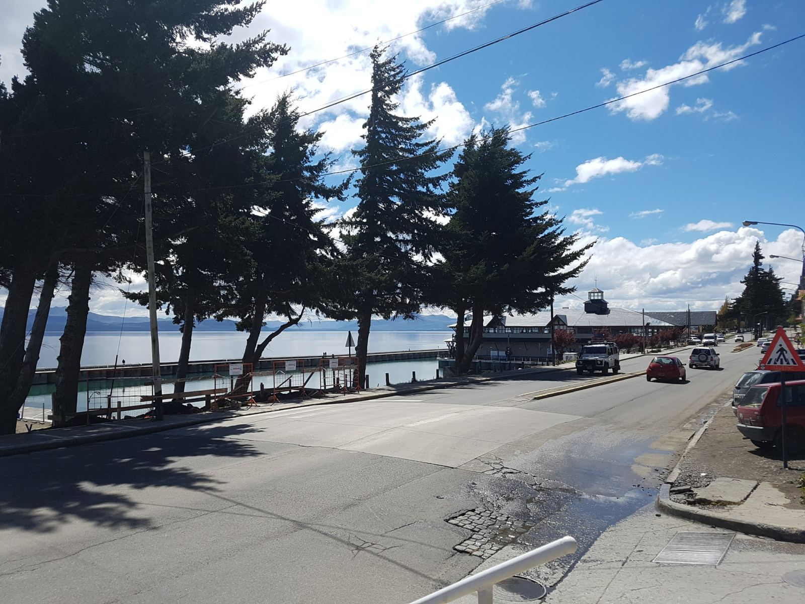
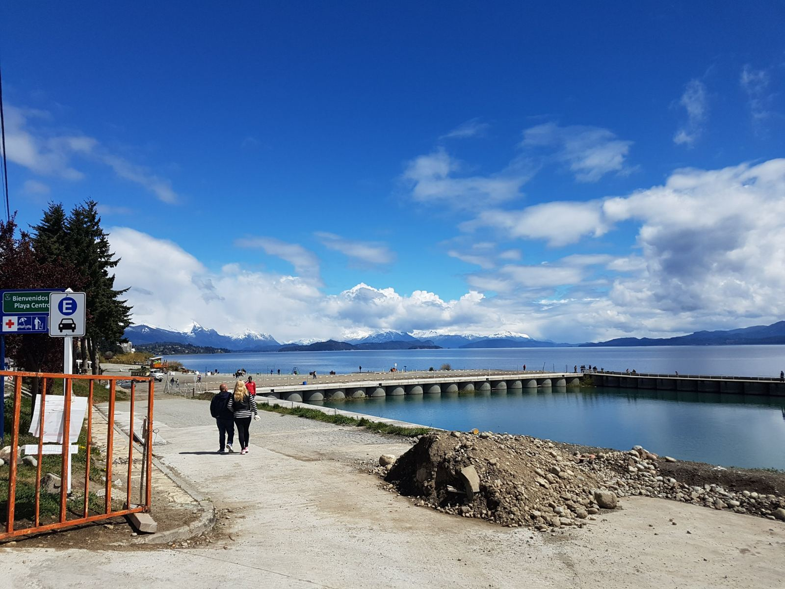
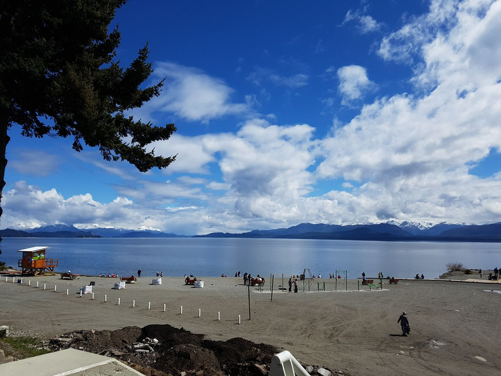
At 11:36 and 11:37 I photographed a group of young people in red jackets sitting on the gravel by the water. They are small in the photos and nobody is identifiable.
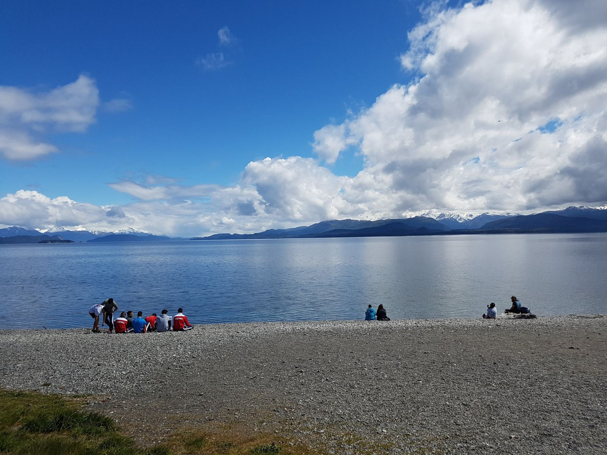
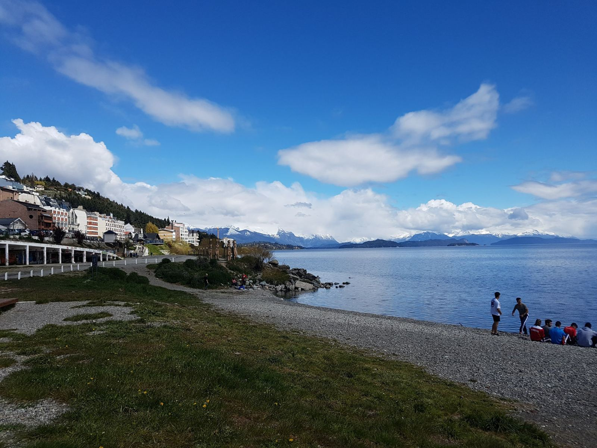
In the evening, at 20:15, I took a photo of a plaza with a crowd. It looks like Centro Cívico, the main square of Bariloche, with buildings of wood and stone and the lake behind. I do not remember what the crowd was waiting for.
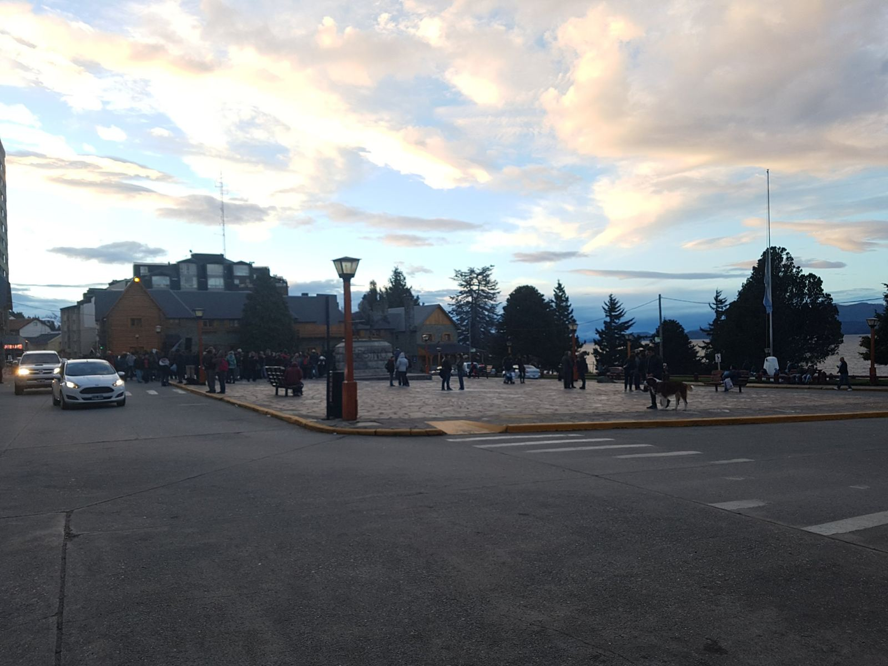
An article from the local news site ANBariloche, published March 16, 2026, says the complex was designed by Ernesto de Estrada, an architect of about 27 who had studied in Europe, and was officially opened on March 17, 1940, after three years of work. It includes the library, a museum, the municipal building, the tourism office, the post office and the police station (ANBariloche, March 16, 2026).
I slept in a hostel that I think was called Punta Sur, and I do not remember how I found it or what I paid. A hostel called Punto Sur exists on Salta 376, about 300 metres from Centro Cívico, on the street the listing calls the city's hostel street. The listing is from December 3, 2025 (Welcome Argentina). It may be the same place, but I have no photo or receipt to prove it.
November 2: a chairlift and the Circuito Chico
On Thursday, November 2, I took a city bus west along the lake. At 16:54 I took two photos through the bus window, one of a quiet bay with houses and parked cars and one of a golf course beside the lake with a white boat docked at the left. Google Photos pins both at Villa Llao Llao, the area at the end of the road along the lake. I do not remember where I got on or off.
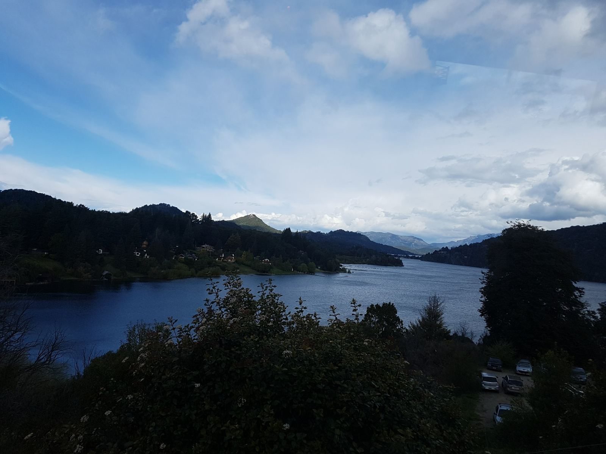
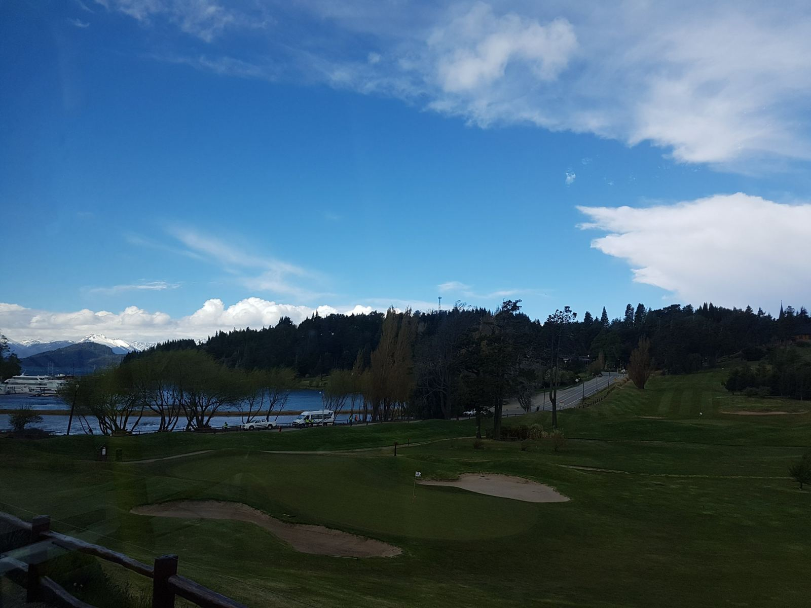
How I paid: I rode the city bus. SUBE is Argentina's rechargeable transport card, like a Rav-Kav. I did not have one. What I did, as I remember it, was give cash, which in Argentina is called efectivo, to a passenger who tapped his own SUBE card for me.
What the rules say: a local news article from February 15, 2017, the year of my trip, says the card is "the exclusive way to pay" on the Mi Bus city buses, and that it is personal, non-transferable and must be registered to its owner. A SUBE card then cost 25 pesos and could be collected free at the SUBE service centre (ANBariloche, February 15, 2017). The city's tourism page, which has no date, says the fare is paid only by SUBE and that cards are sold at kiosks and at an office in the Civic Center (Bariloche tourism). So my trick was a workaround, and I would not rely on it. Buy a card.
From 18:05 I took photos from a hill with a chairlift and a round building with a balcony and a view over the lake, forested peninsulas and snowy mountains. I think this is Cerro Campanario, a hill on the road to Llao Llao that has a chairlift and a lookout. Google Photos pins these photos only as San Carlos de Bariloche, so I cannot confirm the exact place.
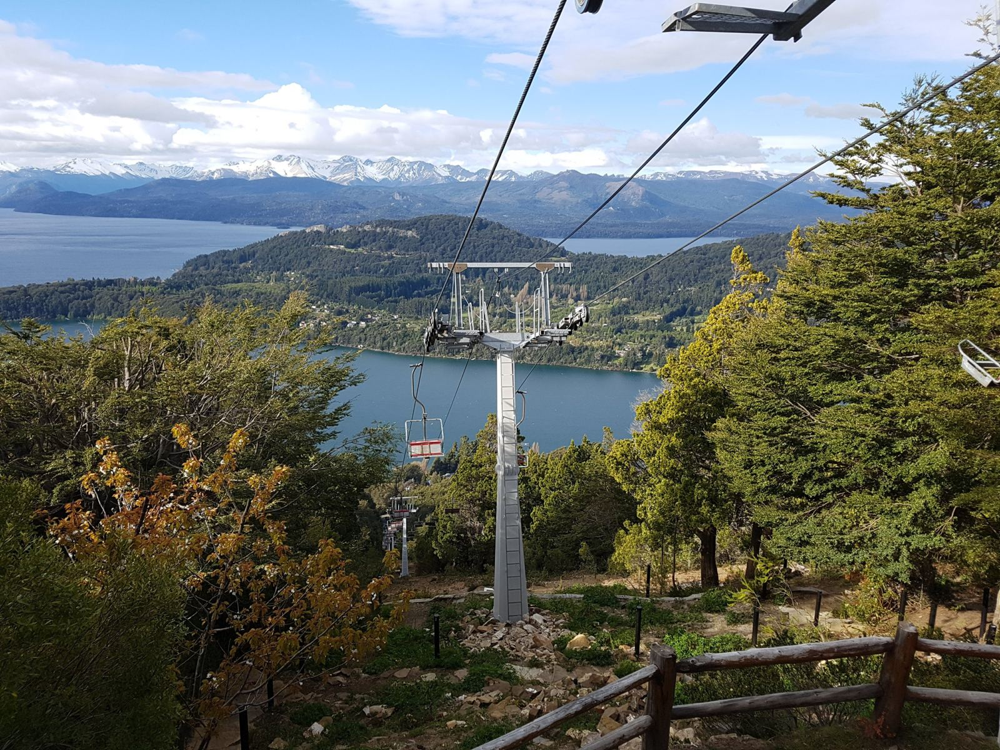
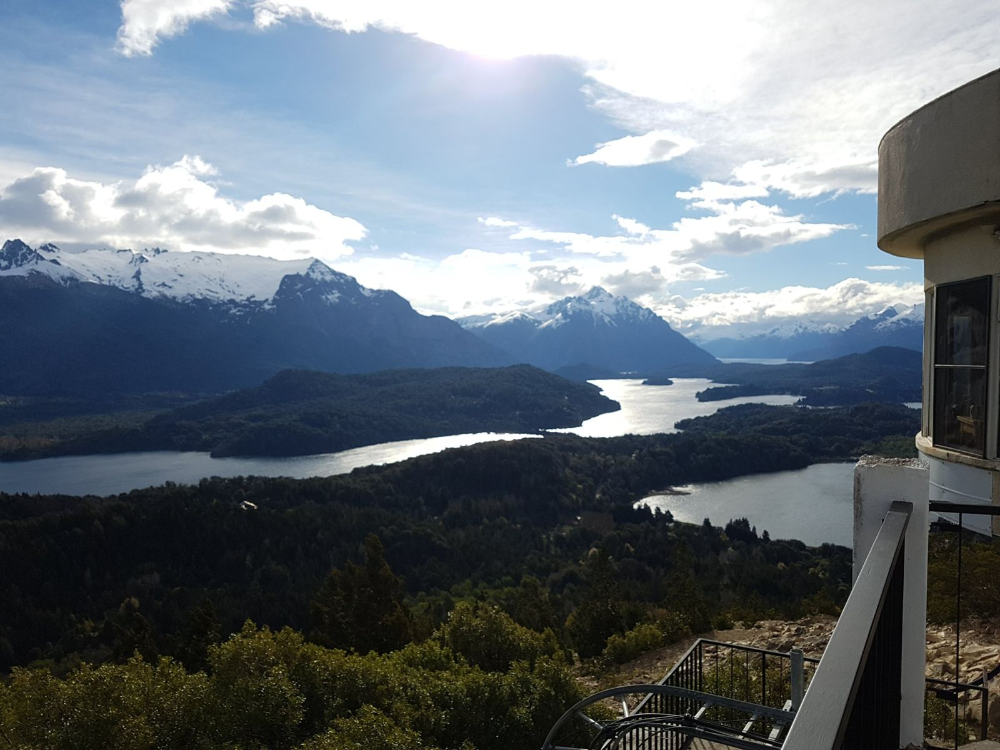
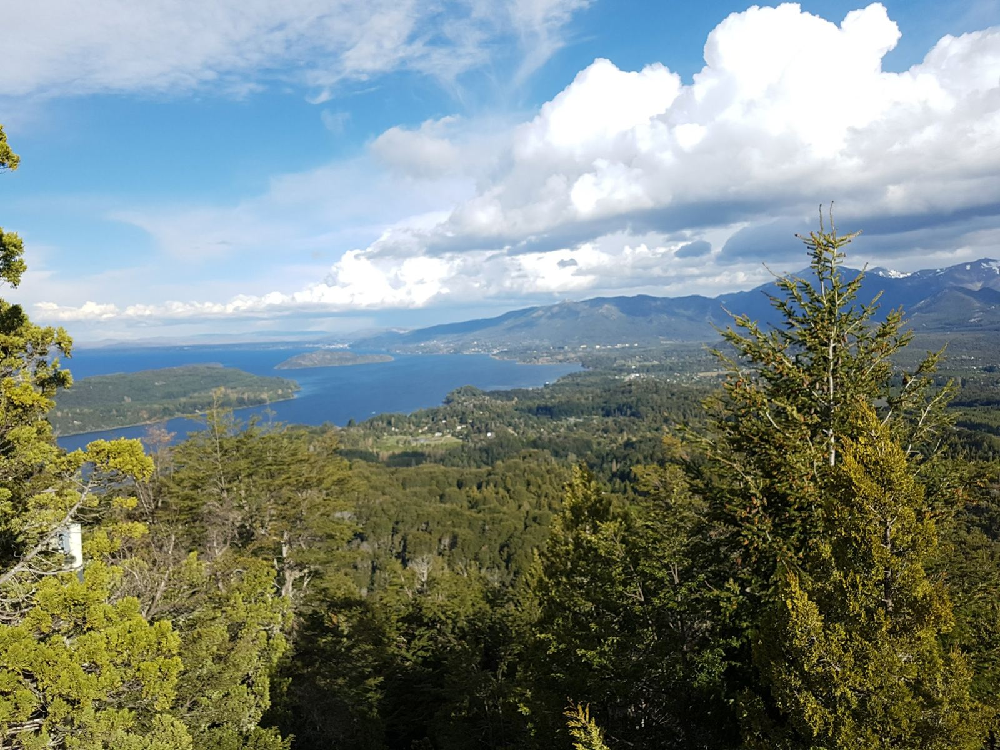
At 18:21 I photographed a wall in a bar. It is covered with banknotes from many countries and with hand-written cards, in dozens of languages, that say there is no WiFi and invite you to enjoy the view. Google Photos has no location for it. It may be the café at the top of the hill, but I am guessing. I blurred the faces on the small photos pinned on the wall.
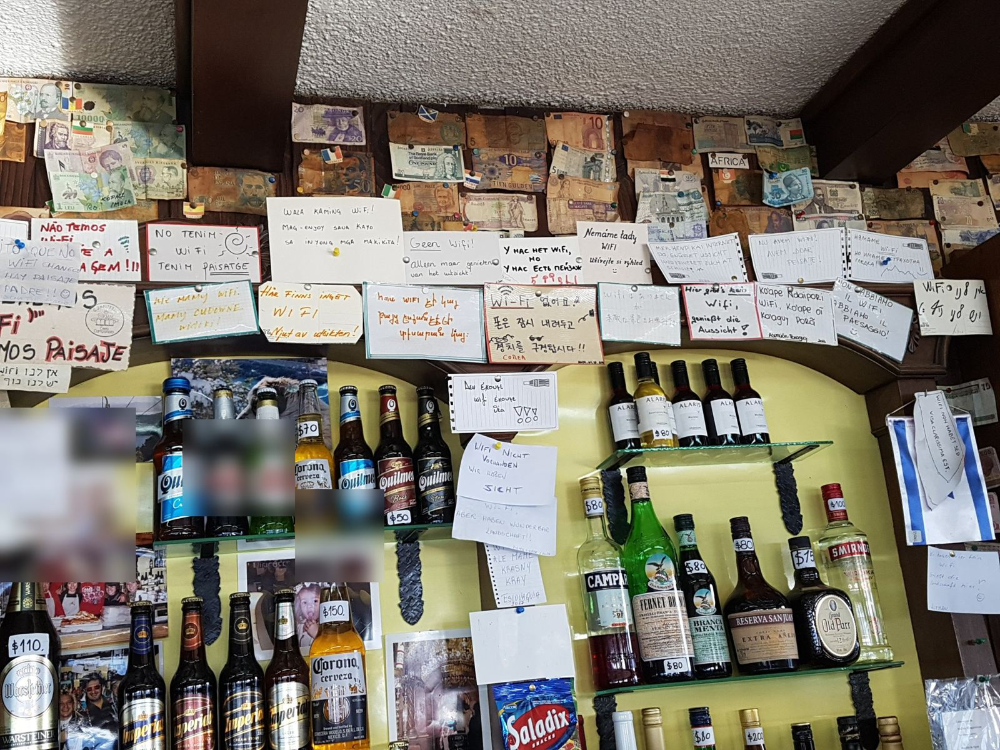
A Brazilian travel guide, first published December 22, 2016 and last modified August 11, 2026, says the chairlift goes up to a summit at 1,050 metres, with 360-degree viewpoints over Lago Nahuel Huapi, Llao Llao and the city. It says city bus line 20 stops in front of the base about every 20 minutes and takes only SUBE, that a round trip costs about 120 Brazilian reais per person in 2026, and that the lift opens at 9:00 and closes between 17:00 and 18:00, sometimes later in summer, and can close without notice because of wind or snow (Dicas Argentina). The city's own tourism page lists line 20 as "Bus Terminal, Downtown, Llao Llao" and does not name Campanario, so the guide is the only source for the stop (Bariloche tourism). Lonely Planet lists the chairlift at Av. Bustillo, Km 18, and gives no price or hours (Lonely Planet). I do not remember which bus I took or what I paid. My photos from the hill run until 18:44, which is later than the guide's closing time, so hours may differ from season to season. Check them before you go.
At 20:39 I took a last photo of the day, a street along the lake at dusk, with snowy mountains and a pink sky.
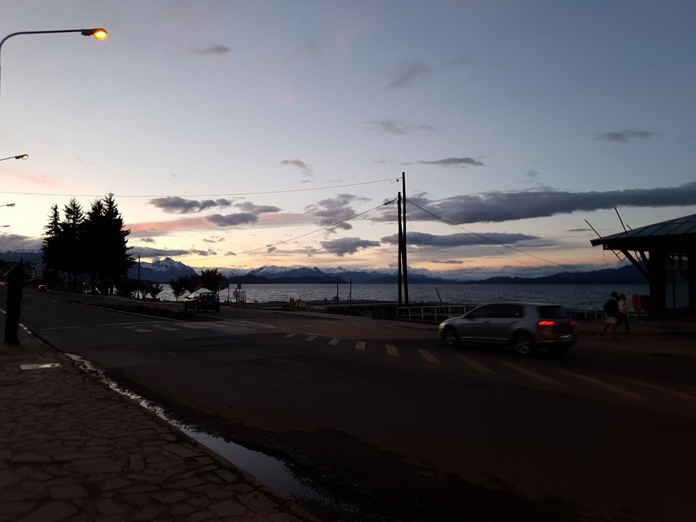
November 3: the skydive
On Friday, November 3, I did a tandem skydive: you are strapped to an instructor, who does the jump and steers. At 15:27 I took a photo of Centro Cívico in bright sun, before the jump. A statue on a horse stands on a stone base at the right, and the base has words painted on it. I think this is the statue of General Julio Argentino Roca.
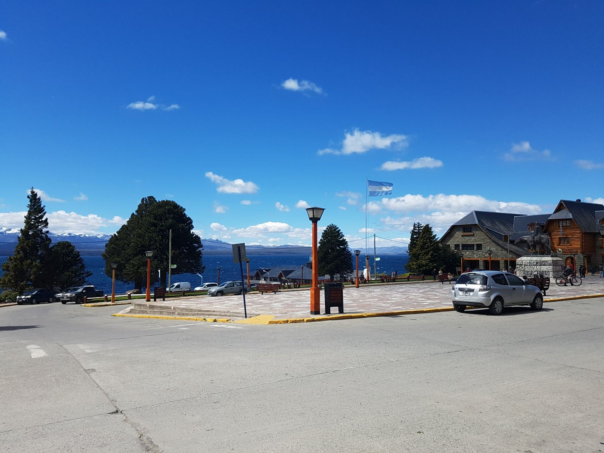
The statue of General Julio Argentino Roca in Centro Cívico is controversial. ANBariloche reports that on July 24, 2023 the national monuments commission approved a plan to move it a short way down the slope toward the lake, citing vandalism, and that a petition against the move had around 44,000 signatures by July 28, 2023 (ANBariloche, July 28, 2023). I did not check whether it was moved.
The jump was arranged through an Israeli I met, who I think then owned a hostel. I do not remember the name of the company, where the airfield was, or the price. I do remember that it was expensive, and I would not do it again just to tick it off a list. As far as I know, in Rosario, a city with fewer tourists, it costs about half as much. I have not verified that.
At 19:00 I took a photo of the plane, a small single-engine plane painted bright pink, with the registration LV-IHY, on a dirt airstrip with snowy mountains behind. The photos after that are frames from the GoPro video of the jump. My instructor's face is blurred in every frame.
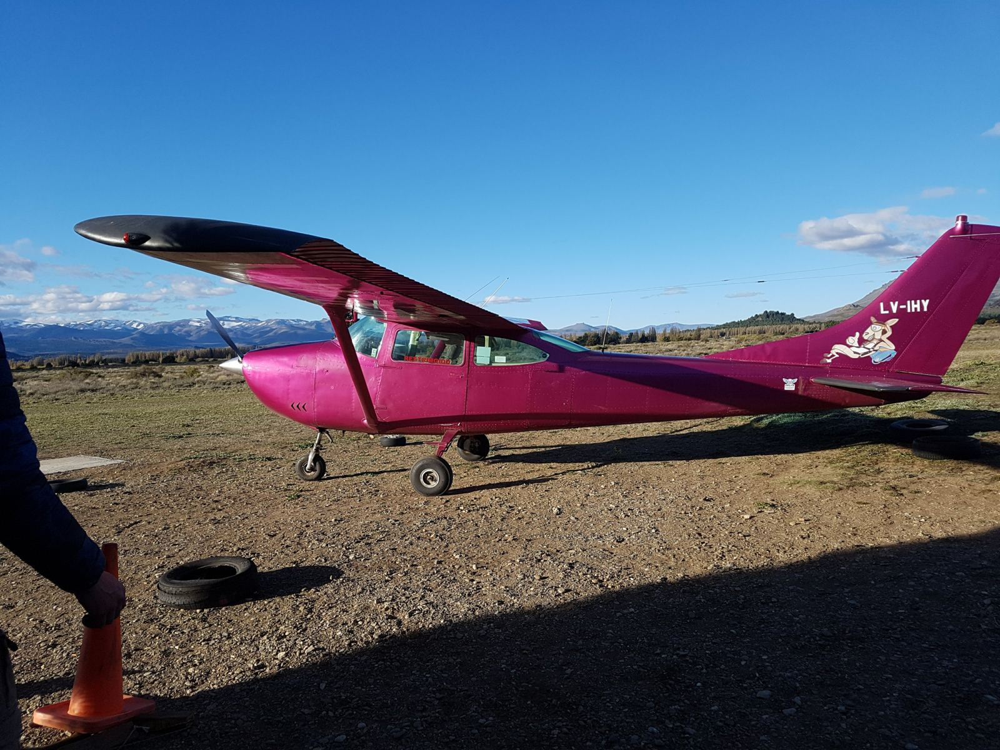
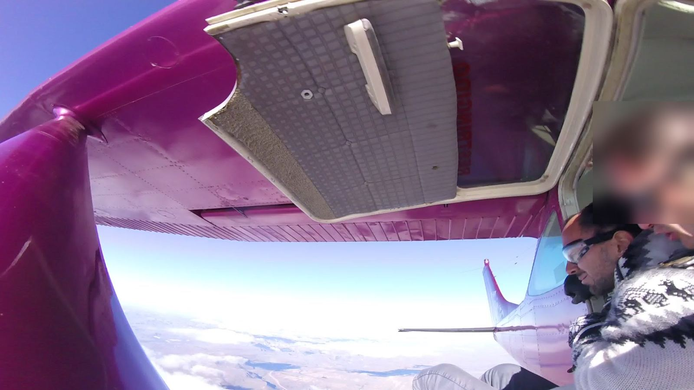
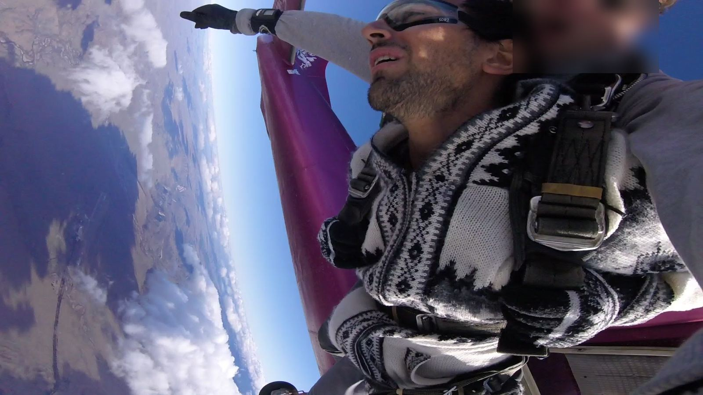
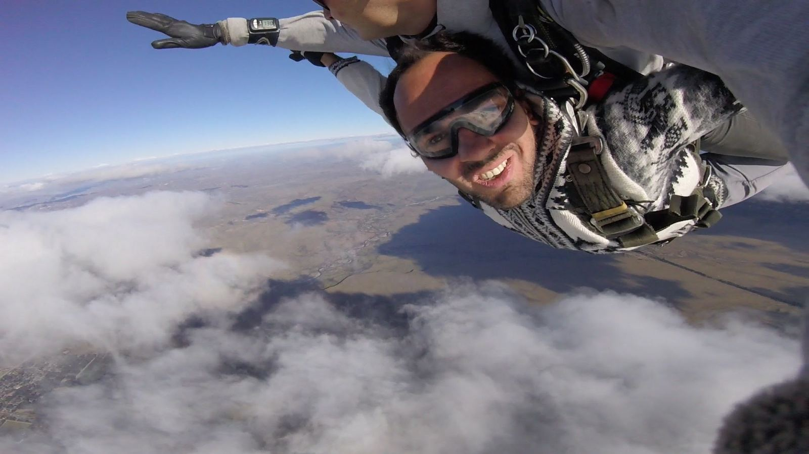
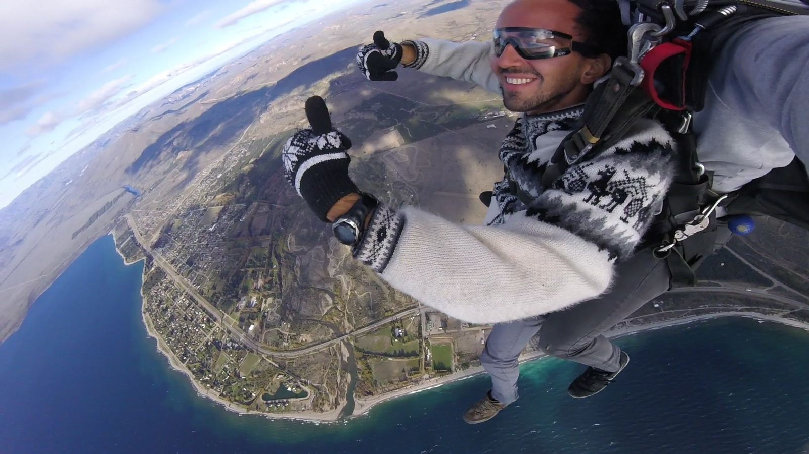
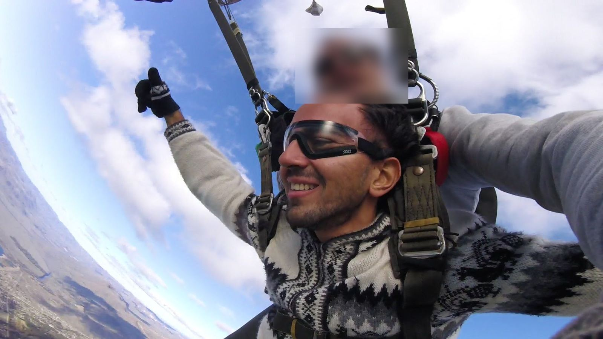
November 4: Lago Puelo
On Saturday, November 4, I took a bus to Lago Puelo, a village in Chubut province, on the way back to Chile. It was not a long ride. I went to a place called Onda Azul, a "chill" place, I would say, and as I understood it the same concept exists for any traveler, not only for Israelis. The signs have Hebrew on them: one reads "a warm home in Patagonia". I stayed less than an hour, because I wanted to continue to Pucón, in Chile. Google Photos pins my two photos there, at 19:01 and 19:13, in the village.
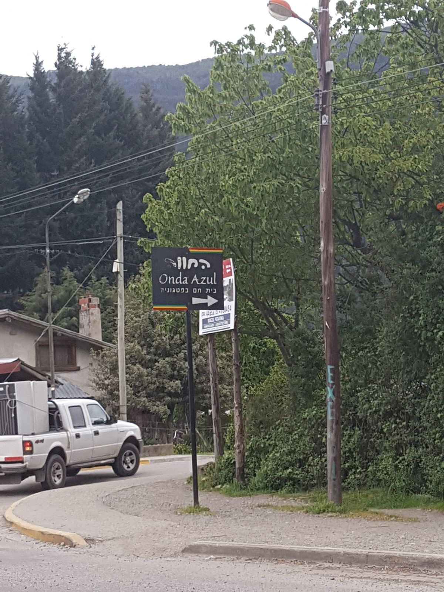
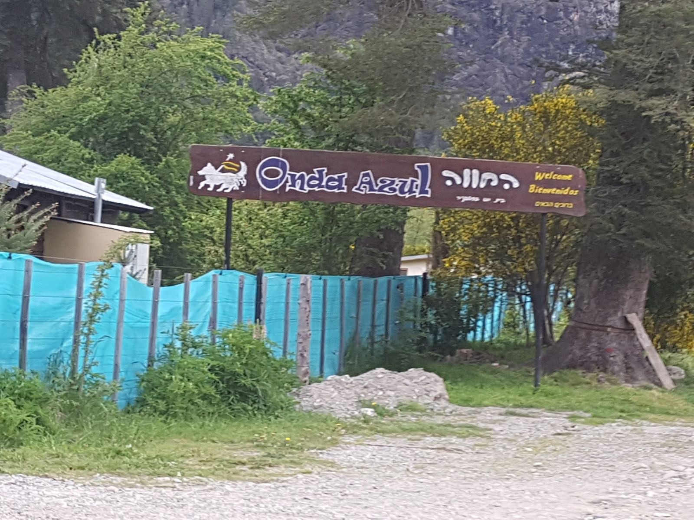
A listing on a regional tourism site describes a hostel called Onda Azul in Lago Puelo, 700 metres from Ruta 16, in the urban area, with shared and private rooms, shared bathrooms, hammocks, a barbecue area and a large park. The listing has no price, no date and no mention of Hebrew or of Israeli travelers (Welcome Argentina). I do not know whether this is the same place and the same owners as in 2017. The name matches the signs in my photos.
I do not remember how I continued from there, how many buses I changed, or where I crossed the border into Chile. Google Photos has no photo between 19:13 on November 4 and the evening of November 5, so I will not guess. My next photo is from Sunday, November 5, at 19:11, already in Chile, so I will pick it up in the Chile chapter.
What I think now
The lake and the mountains are what Bariloche has, and I liked just walking along the shore. The chairlift gave a good view for the price of a ticket and a bus ride. I would not repeat the 27 hours of buses, and I would not repeat the skydive, which was about doing it once. If you have a few days, put the time into the lake and the hills, and look at a flight from El Calafate before you buy a ticket.
What I do not remember
I do not remember the exact date I left El Calafate, the bus companies and the prices of the three buses, how I got from the bus terminal to the lake, what the crowd in the plaza on November 1 was waiting for, whether the hostel was really Punta Sur, what I paid for it, which bus I took on November 2 and how much the chairlift cost, which bar the wall of WiFi cards was in, the name of the skydiving company, where the airfield was and what I paid, how I continued from Lago Puelo, and where I crossed into Chile. I would rather leave these empty than make them up.